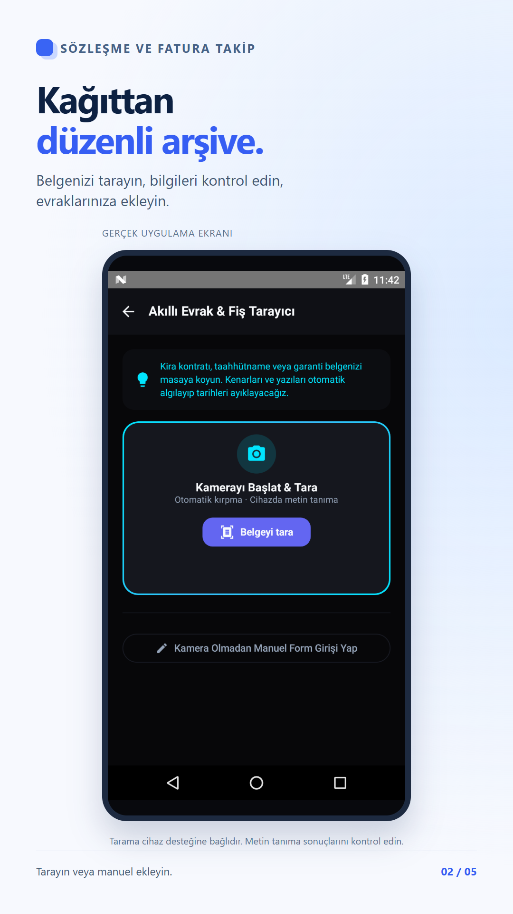
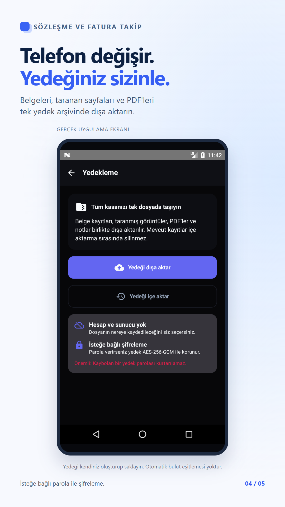

Belgelerinizi tarayın ve kendi yedeğinizi oluşturun
Fatura ve sözleşmelerin fotoğrafını çekmek ilk adımdır. Kullanışlı bir arşiv için görüntünün okunaklı olması, kaydın doğru adlandırılması ve bir yedeğinin bulunması da önemlidir.
Tarama sonrası bilgileri kontrol edin
- Evrak tarama ekranından taramayı başlatın. Belgenin tamamının kadrajda olduğundan emin olun.
- Tarama sonucunda kesilmiş sayfa veya bulanık yazı varsa yeniden çekin.
- Metin tanımanın çıkardığı bilgileri kontrol edin; tarih ve tutarları otomatik sonuca güvenerek kaydetmeyin.
- Başlık ve kategoriyi düzenleyip kaydı tamamlayın. Tarama kullanılamıyorsa manuel girişten yararlanın.

Yedeği dışa aktarın
Yedekleme ekranında dışa aktarma seçeneğini kullanın. Yedeği kaydedeceğiniz konumu siz seçersiniz. Arşiv, belge kayıtlarını ve ilgili taranmış sayfa/PDF dosyalarını taşımak için kullanılır. Bu işlem otomatik bulut eşitlemesi değildir.
İsteğe bağlı parolayı güvenli saklayın
Şifreli yedek seçerseniz parolayı güvenli bir yerde saklayın. Kaybolan yedek parolasını destek ekibi kurtaramaz. Yedek dosyanızı veya parolanızı sosyal medyada ve destek mesajlarında paylaşmayın.

Telefon değiştirmeden önce geri yüklemeyi doğrulayın
Yeni cihazda yedeği içe aktarın; şifreliyse parolayı girin. Belge listesini, taranmış sayfaları ve PDF'leri açıp kontrol edin. Kayıtların ve eklerin erişilebilir olduğunu doğrulamadan eski cihazdaki verileri silmeyin. Yeni telefonda bildirim izinlerini ayrıca kontrol edin.
Garanti belgeleri rehberi · Sözleşme hatırlatmaları rehberi
Google Play'de uygulamayı görüntüleÜcretsiz sürüm reklam ve evrak sınırı içerir; ek özellikler PRO'dadır.